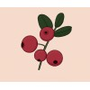

Professional Experience
-
 Research Manager at Eco (2022 - present)
Research Manager at Eco (2022 - present)
-  Owner at Lingonberry Labs (2021 - present)
-
 Research Lead at HumanFirst (2021-2022)
Research Lead at HumanFirst (2021-2022)
-
 Innovation Fellow at UMN MDC (2020-2021)
Innovation Fellow at UMN MDC (2020-2021)
-
 Senior R&D Engineer at Edwards Lifesciences (2018-2020)
Senior R&D Engineer at Edwards Lifesciences (2018-2020)
-
 Biomedical Engineer at Sonendo (2016-2018)
Biomedical Engineer at Sonendo (2016-2018)
Core Consulting Areas
I like to help medical device companies with:
- early stage ideation, market research, and proof of concept
- requirements, verification, validation, and test system design
- root cause analysis and failure analysis
- early stage ideation and technical research
- protocol design, tokenomics, and specifications
Publications / Patents
-
Publications
- Journal of Medical Internet Research (2021): Sensor Data Integration: A New Cross-Industry Collaboration to Articulate Value, Define Needs, and Advance a Framework for Best Practices
- Nature Communications (2019): Cholinergic neural activity directs retinal layer-specific angiogenesis and blood retinal barrier formation
- I have 4 patents pending... hoping 3 of the 4 end up being published 🙏
What I'm into right now...
- Petro Dobromylskyj's Hyperlipid Blog and Fire in a Bottle
- Learning Rust for an embedded programming project involving the Precursor